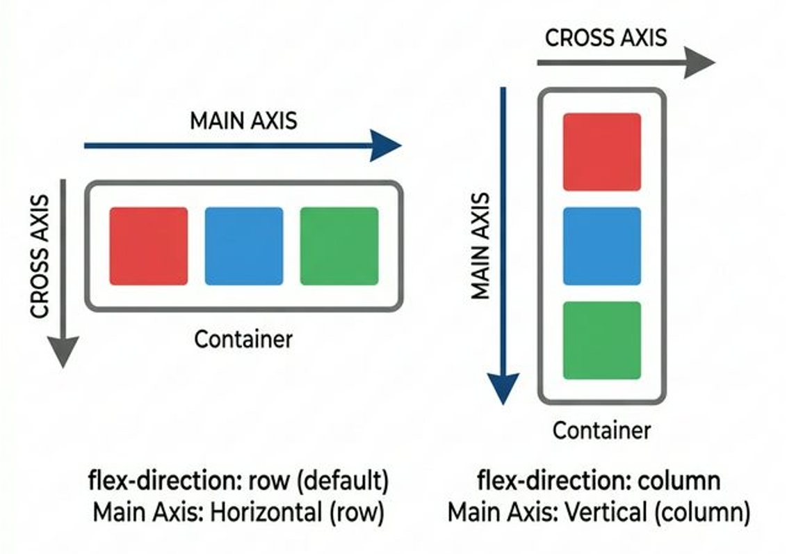
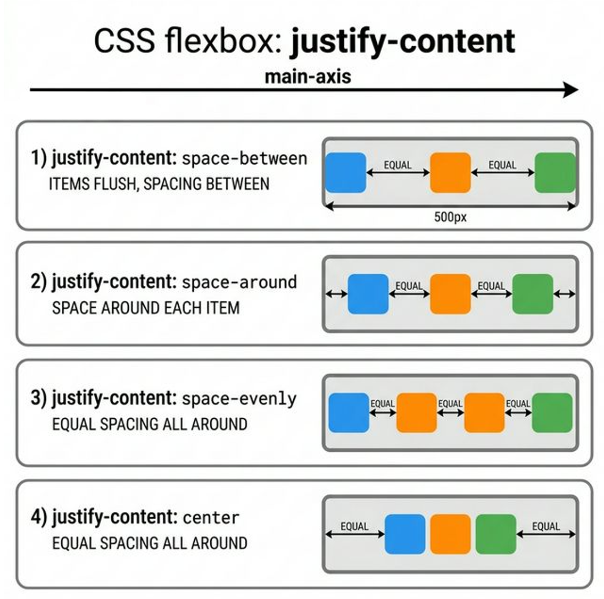
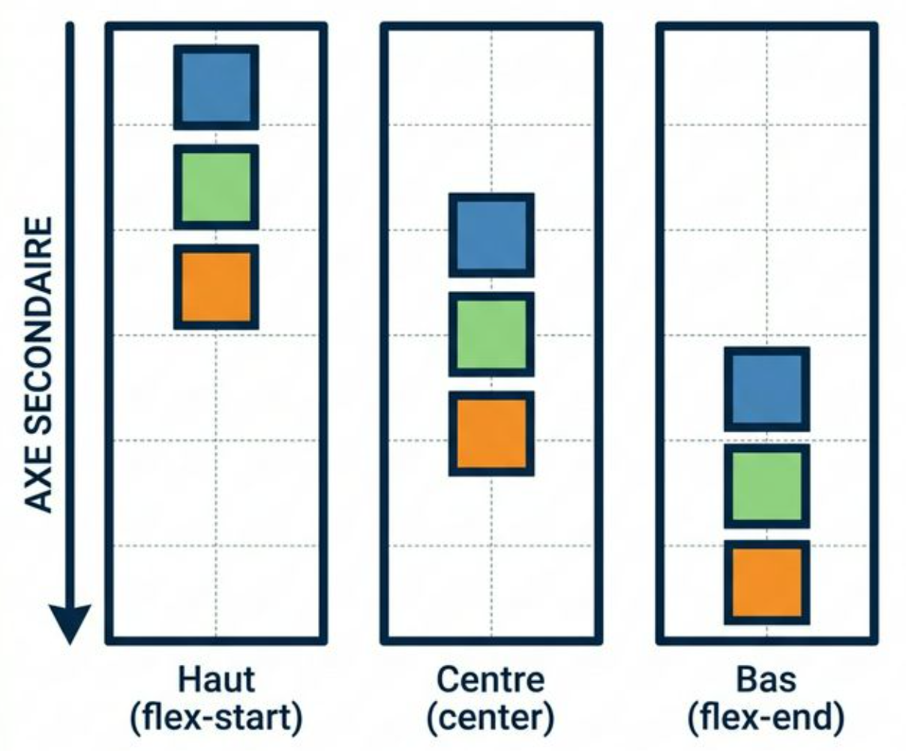
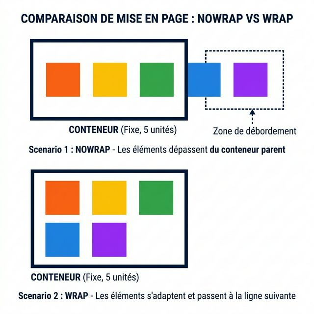

CSS Flexbox¶
Introduction¶
Introduction Conceptuelle Flexbox
Pendant les premières années du Web, positionner des blocs nécessitait des calculs complexes et des propriétés inadaptées (float, inline-block).
En 2015, le W3C a standardisé Flexbox (The Flexible Box Module), qui a révolutionné l'intégration web.
Flexbox est un système unidimensionnel élastique. Au lieu d'assigner des dimensions rigides à vos éléments, vous déclarez un Conteneur Parent en Flexbox. Instantanément, la logique d'empilement naturelle du HTML est désactivée à l'intérieur de ce conteneur. Les éléments Enfants directs obtiennent de nouveaux comportements mathématiques fluides : - Ils se rangent automatiquement sur un seul rail directionnel. - Ils peuvent "grandir" pour absorber le vide disponible à l'écran. - Ils rétrécissent harmonieusement pour éviter les débordements (mobile). - Ils s'espacent de manière mathématiquement parfaite.
Le flux traditionnel (de haut en bas) est remplacé par un système d'axes vectoriels piloté par le parent. Ce module est la fondation indispensable du design responsive moderne.
La Loi Fondamentale : Le Concept des "Deux Axes"¶
C'est là que 99% des débutants se brisent les dents. Ils apprennent des commandes par cœur (justify-content: center) sans comprendre la logique sous-jacente. L'erreur fatale est de penser en termes de "Gauche/Droite" ou "Haut/Bas". Dans Matrix Flexbox, la gauche ou la droite n'existent pas. Seul l'Axe existe.
L'Axe Principal (Main Axis) et l'Axe Secondaire (Cross Axis)¶
Lorsque vous activez Flexbox, un rail invisible traverse votre conteneur. Ce rail est l'Axe Principal.
Une ligne perpendiculaire à ce rail le traverse automatiquement : c'est l'Axe Secondaire (ou axe croisé).
Toute la magie (et la complexité visuelle pour un débutant) vient de cette règle immuable : L'Axe Principal peut être pivoté par le développeur !
L'importance des illustrations visuelles
Afin d'éclaircir ces concepts spatiaux essentiels qui peuvent sembler abstraits ou difficiles à concevoir mentalement (comme la direction des axes, la distribution du vide ou l'alignement de l'axe secondaire), ce module regorge d'illustrations schématiques générées pour vous. Chaque concept majeur est accompagné d'un visuel. Prenez le temps d'observer ces illustrations : elles vous permettront de « voir » le comportement invisible de Flexbox sur votre page et de démystifier son comportement !

Cette illustration schématise la bascule fondamentale entre le mode Ligne (Row) où l'axe principal est horizontal, et le mode Colonne (Column) où ce même axe pivote à 90 degrés. L'axe secondaire le suit toujours perpendiculairement.
LE SECRET A GRAVER DANS LA ROCHE
justify-contentne veut PAS dire "aligne à gauche ou à droite". Cela veut très exactement dire : "Gère le vide tout le long de l'Axe PRINCIPAL, peu importe dans quel sens il est tourné !"align-itemsne veut PAS dire "centre verticalement". Cela veut dire : "Aligne les enfants sur l'Axe SECONDAIRE perpendiculaire, peu importe où il se trouve !"
Le Déclenchement et le choix du Rail (flex-direction)¶
Flexbox repose toujours sur la relation Parent / Enfants_directs. On n'applique jamais la commande flex sur l'enfant que l'on veut déplacer. On l'applique au conteneur qui l'englobe.
<!-- LA GRANDE BOITE (Le Parent) -->
<nav class="super-menu-parent">
<!-- LES 3 ENFANTS DIRECTS (Qui vont devenir élastiques) -->
<a href="#" class="enfant">Accueil</a>
<a href="#" class="enfant">Produits</a>
<a href="#" class="enfant">Contact</a>
</nav>
.super-menu-parent {
/* COUP D'ENVOI : Le Parent active le contexte Flexbox */
display: flex;
/* LE PILOTAGE : Je choisis le sens du RAIL (Axe Principal) */
flex-direction: row;
}
Explication exhaustive des valeurs de flex-direction :¶
Les 4 Sens Physiques
row(Valeur par Défaut) : L'axe principal est horizontal, comme un texte de gauche à droite. L'axe secondaire est donc la hauteur (vertical). Les enfants se colleront naturellement les uns à côté des autres (gauche -> droite).column: L'axe principal pivote à 90°. Il devient vertical (de haut en bas). L'axe secondaire devient la largeur (horizontal). Les enfants s'empileront naturellement en colonne.row-reverse: L'axe principal reste horizontal, mais l'origine démarre complètement à Droite ! Le premier enfant HTML sera affiché tout à droite de l'écran, et les suivants se construiront vers la gauche.column-reverse: Comme une colonne, mais la pile commence en bas de la boîte et empile les éléments vers le haut.
La distribution Spatiale : justify-content¶
Maintenant, imaginez que vos enfants sont posés sur le rail principal (prenons un row, donc alignés horizontalement de gauche à droite). Votre parent fait 1000px de large, mais vos 3 petits enfants ne consomment que 300px au total. Il reste 700px de VIDE.
La propriété justify-content dicte comment distribuer précisément ce vide restant sur la longueur de l'axe principal.
Le Comportement selon la direction choisie (C'est ici que le débutant se perd !)¶
Le piège de la direction : Comprendre justify-content
L'erreur la plus commune est de retenir que justify-content égale "Horizontal". C'est faux.
justify-content dirige l'Axe Principal.
- Si le parent est en
flex-direction: row(défaut) : L'axe principal est Horizontal. Ici,justify-contentgère l'espacement de Gauche à Droite. - Si le parent est en
flex-direction: column: L'axe principal pivote à 90°. Il devient Vertical. Désormais,justify-contentgère l'espacement de Haut en Bas (Hauteur) !
Si vous comprenez ce changement de gravité, vous maîtrisez Flexbox.

Représentation visuelle de la distribution mathématique du vide sur l'Axe Principal. L'instruction repousse les éléments de sorte à absorber stratégiquement les espaces restants.
.super-menu-parent {
display: flex;
flex-direction: row;
/* Écarte puissamment tous les enfants pour répartir le vide ! */
justify-content: space-between;
}
Le dictionnaire complet des valeurs justify-content
flex-start(Défaut) : Tous les enfants sont écrasés ensemble au point de départ de l'axe (Tout à gauche enrow, ou Tout en haut encolumn).flex-end: Tous les enfants sont poussés en bloc au point d'arrivée de l'axe (Tout à droite enrow, ou Tout en bas de la boîte encolumn).center: Le groupe d'enfants est centré collectivement au milieu du rail. La même proportion de vide est ajoutée de part et d'autre des extrémités du groupe.space-between: Une répulsion mathématique extrême. Le premier enfant touche l'origine parfaite, le dernier enfant touche la fin parfaite. Le vide restant est coupé en parts parfaitement égales et glissé ENTRE les enfants du milieu.space-around: Distribue une marge de vide égale "autour" de chaque enfant (à sa gauche, et à sa droite). Un enfant au milieu aura la somme du vide de son confrère gauche + le sien. (Les vides aux extrémités de l'écran paraissent deux fois plus petits que les vides internes).space-evenly: Distribution robotique absolue. L'espace mathématique est strictement, au pixel près, le même entre le bord gauche de l'écran, entre l'enfant 1 et 2, entre l'enfant 2 et 3, et entre le dernier enfant et le bord droit de l'écran.
Gérer l'axe contraire : align-items¶
Très bien, notre espace principal est géré. Mais observons l'Axe Secondaire de travers !
Si vous êtes en mode row (ligne de gauche à droite), votre Axe Secondaire est Vertical. Et si votre menu fait 120 pixels de height (hauteur totale) alors que le texte de vos enfants fait 20 pixels. Où doivent "flotter" vos enfants dans les 100 pixels qui restent "en haut ou en bas" de leur enveloppe parentale ?
C'est l'essence d'align-items : l'alignement individuel transversal de chaque objet.

L'alignement transversal "align-items" force les enfants à se concentrer parfaitement au milieu (center) de l'épaisseur du conteneur parent (Axe Secondaire), ignorant le comportement de flottaison rigide habituel.
.super-menu-parent {
display: flex;
flex-direction: row;
height: 120px;
/* Gestion du vide sur le rail principal (Horizontal -> Je pousse à droite) */
justify-content: flex-end;
/* Gestion de la position sur le rail d'épaisseur perpendiculaire (Vertical -> Je centre parfaitement les textes dans les 120px !) */
align-items: center;
}
Les comportements transversaux de align-items
stretch(Défaut) : Les enfants s'étirent de toutes leurs forces pour remplir intimement 100% de la taille de l'axe transversal ciblé. S'il n'y a pas deheightfixe sur un enfant, il se gonflera du haut vers le bas pour remplir les 120px de notre exemple.flex-start: Tous les enfants fuient l'étirement et se recroquevillent collés au "toit" (début) de l'axe secondaire.flex-end: Tous les enfants se collent avec gravité sur le "sol" (fin) de l'axe secondaire.center: La perfection géométrique en plein milieu de l'axe transversal, sans s'étirer.baseline: Un outil vital pour la typographie ! Aligne les enfants non pas selon leurs gros bords "physiques/carrés", mais sur la ligne d'écriture interne de leur police de texte, pour que tous les mots, petits, grands, ou majuscules d'éléments différents, soient assis sur le même trait d'encre imaginaire.
Le Graal Pédagogique : Le Centrage Absolu Bidimensionnel¶
Centrer le point central d'un objet (une Modal cliquable, une belle Image) à la fois horizontalement ET verticalement au centre absolu d'un écran était cauchemardesque jusqu'en 2015.
Le "Flex Center" permet cela en 3 lignes.
.fenetre-modale-parente {
/* La boite parente devient Flexbox */
display: flex;
/* Elle remplit 100% de la hauteur visible de l'écran de l'utilisateur de force */
height: 100vh;
/* Par défaut on est en ROW. */
/* On distribue donc l'objet au milieu horizontalement (Axe Principal) */
justify-content: center;
/* Et on le place au milieu sur l'Axe de la hauteur (Axe Secondaire) */
align-items: center;
}
L'Étouffement : La cassure de ligne (flex-wrap)¶
Si Flexbox est intelligent, il a un défaut mortel d'entêtement. Un rail Flexbox ne passera jamais à la ligne par défaut ! Le comportement d'origine est nowrap.
Que se passe-t-il si vous demandez à une série de 10 blocs images (width: 300px chacune) de se mettre en row (ligne), et qu'un internaute lit le contenu sur un mobile de 400px de large ? L'écran ne fera jamais 3000px !
Flexbox va ignorer le désir de largeur des 10 enfants. Il va les martyriser, les "écraser" tous physiquement les uns dans les autres pour les faire tenir de force sur une seule et unique misérable ligne de 400px de l'écran, les rendant tous minuscules et déformés.
Pour libérer les enfants et leur permettre de respirer sur un modèle "grille fluide", on utilise flex-wrap. La fonction désactive l'écrasement automatique : "Si je dépasse la largeur du conteneur en gardant ma taille légitime de 300px, passe-moi en toute sécurité *EN DESSOUS sur un second rail virtuel !"*

Démonstration de "flex-wrap: wrap". Lorsqu'il n'y a physiquement plus assez d'espace pour que l'enfant conserve sa taille théorique idéale sans s'écraser, il est sauvé et basculé automatiquement sur un second rail virtuel en dessous.
.galerie-produits-boutique {
display: flex;
flex-direction: row;
/* ACTIVE le passage à la ligne au lieu de l'écrasement mortel de la page : la fondation du responsive sans media-queries ! */
flex-wrap: wrap;
}
Le "justify-content" de la Hauteur : L'alignement profond (align-content)¶
Voici une faille majeure de compréhension chez les confirmés.
Lorsque vous avez activé flex-wrap: wrap et que vous vous retrouvez subitement avec 4 ou 5 rangées consécutives d'enfants empilées, comment gérer l'espace vertical ENTRE ces grands tas de rangées sur le parent ?
Beaucoup essaieront de taper encore une fois la commande habituelle d'align-items, et rien ne marchera. align-items gère l'alignement précis d'un objet dans l'épaisseur de *sa ligne simple virtuelle*. Dès que Flexbox génère du Multi-lignes, l'espacement entre ces lignes globales elles-mêmes est piloté par une nouvelle commande exclusive : align-content.
.gros-conteneur-grille {
display: flex;
flex-direction: row;
flex-wrap: wrap; /* Je gènere l'existence de Lignes Multiples (Wrapping) */
height: 800px; /* Le parent fait une hauteur massive ! */
justify-content: center; /* Horizontalement, toutes mes rangées sont centrées au milieu */
/* Que faire du vide monstrueux en haut et bas s'il y a 800px de hauteur totale ? */
/* align-items ne sert à rien ici pour toute la structure ! On utilise Content : */
align-content: space-between;
/* Les rangées seront repoussées verticalement pour toucher le plafond de 800px,
le sol de 800px, et l'espace sera réparti entre les rangées centrales ! */
}
Note : align-content accepte strictement les mêmes propriétés exhaustives de vide que justify-content.
L'hygiène absolue de l'air : L'espacement (gap)¶
Pendant de très très longues années, si l'on voulait séparer 3 boutons alignés en Flexbox sur la longueur row pour ne pas qu'ils se touchent horriblement, le développeur devait cibler chaque bouton enfant, lui mettre un cruel paramètre margin-right: 20px, ce qui entraînait le bug infâme du 3e bouton qui se mettait à "pousser" la bordure droite du conteneur parent au lieu de s'y coller. Il fallait écrire des correctifs mathématiques mathématiques insupportables (:last-child { margin-right: 0; }).
La propriété gap injecte nativement et mathématiquement des interstices de vide hermétique EXACTEMENT et UNIQUEMENT entre les enfants (au niveau global parente), sans jamais parasiter le bord externe du conteneur !
.navigation-espacee {
display: flex;
/* C'est terminé les margins sales. Un trou sans couleur clair et net de 20px apparait entre chaque enfant Flexbox ! */
gap: 20px;
/* Note : On peut cibler l'espace selon qu'un enfant vient de sauter de niveau (wrap) ou son alignement normal sur rail ! */
/* gap: [espace_vertical_entre_rangees] [espace_horizontal_sur_le_rail]; */
gap: 15px 30px;
}
9. Le Comportement Individuel des Enfants Flex¶
Maintenant que le Parent a défini les axes et distribué l'espace global, Flexbox permet au développeur d'interagir spécifiquement avec le comportement élastique de chaque enfant direct. Ces instructions s'appliquent strictement aux éléments .enfant.
9.1 La Taille Fondamentale (flex-basis)¶
Plutôt que d'utiliser des width et height absolus qui ne suivent pas la rotation de l'axe principal, on préfèrera utiliser flex-basis.
flex-basis définit : "Quelle est la taille idéale que cet élément devrait occuper sur l'axe principal, avant que Flexbox n'applique ses mathématiques de redimensionnement ?"
.enfant-standard {
/* En "row", cela agira comme "width: 250px". En "column", comme "height: 250px". */
flex-basis: 250px;
}
9.2 La Capacité de Croissance (flex-grow)¶
S'il reste beaucoup d'espace vide au long du rail principal (ex: 700px), un ou plusieurs enfants peuvent être autorisés à grandir pour absorber ce vide manquant. flex-grow est basé sur la proportion mathématique, sans unité de pixel. (La valeur par défaut est 0 : ne pas grandir).
.enfant-normal { flex-grow: 1; }
.enfant-important { flex-grow: 2; }
/* Explication Mathématique :
L'enfant "Important" a un ratio de croissance de 2, et "Normal" a 1 (Total = 3 points de force). L'espace vide global restant sur le rail est divisé en 3 fractions. L'enfant "Important" grandira proportionnellement pour manger (2/3) de la surface libre, et le "Normal" avalera quant à lui (1/3).
*/
9.3 La Capacité de Rétrécissement (flex-shrink)¶
Si la fenêtre du navigateur devient plus petite que l'addition des tailles prévisionnelles (flex-basis) des enfants, ces derniers DOIVENT obligatoirement rétrécir pour ne pas faire déborder la page (Responsive Design). flex-shrink indique à quelle intensité un élément est autorisé à se compresser par rapport à ses frères. (La valeur par défaut est 1 : compression équitable de tout le monde en même temps).
.image-decorative-secondaire {
/* Ce composant cèdera et se comprimera 2 fois plus vite que les autres textes pour leur sauver l'espace. */
flex-shrink: 2;
}
.logo-intouchable {
/* Le niveau inaltérable. Mettre la valeur 0 interdit strictement au navigateur de compresser le composant. Il conservera sa taille, même si le site entier déborde de l'écran du mobile ! */
flex-shrink: 0;
}
L'astuce universelle : Le raccourci flex global
C'est la technique des développeurs seniors. Gérer séparément 3 attributs flex est lourd en code pour chaque composant unique. Le mot clé aggloméré flex permet de dicter les 3 volontés élastiques en un seul trait de génie ordonné d'avance : Grow (Grandir) - Shrink (S'écraser) - Basis (Idéalement je mesure...).
9.4 Alignement Individuel Dérogatoire (align-self)¶
Alors que align-items sur le conteneur Parent affecte mathématiquement toute la rangée entière (tout le monde se centre ou s'étire en même temps), la propriété align-self autorise un composant enfant en particulier à ignorer la règle de file et utiliser un autre alignement sur ce même Axe Secondaire.
.composant-isole {
/* Outrepasse le "align-items: center" du parent, et s'aligne indépendamment tout au fond (en bas) sur l'Axe Secondaire. */
align-self: flex-end;
}
9.5 La Réorganisation Visuelle de l'Index (order)¶
Un code HTML d'origine est intrinsèquement structurel (lu informatiquement de haut en bas). Le CSS permet d'altérer purement visuellement l'ordre d'affichage final de vos blocs, grâce à la flexibilité poussée de order. Ceci est vital en responsive mobile pour faire passer un menu en haut order: -1 sans restructurer tout votre code source et l'algorithme original de votre projet web.
.element-qui-doit-passer-a-la-fin {
/* Tous les éléments Flexbox naissent neutres avec l'ordre Universel { order : 0 }.
Si je veux déporter mon élément à la fin visuellement, on modifie cet ordre optique. */
order: 99;
}
.element-urgent-premier {
/* Inversement. Une valeur abyssale mathématique "Antérieure" imposera à l'enfant
d'apparaitre OPTIQUEMENT avant même le tout premier élément du HTML (qui est 0) ! */
order: -1;
}
Le Match Ultime : Flexbox vs CSS Grid¶
Un grand classique chez les débutants est de vouloir tout construire avec Flexbox (en imbriquant des tonnes de lignes et colonnes pour forcer un tableau complexe), ou inversement, de ne jurer que par Grid pour aligner 3 malheureux liens. C'est une erreur stratégique. Ces deux technologies ne sont pas concurrentes, elles sont parfaitement complémentaires.
Quand utiliser Flexbox ? (L'alignement directionnel)¶
- Le Micro-Layout : L'intérieur des petits composants. Flexbox excelle dans les "détails" de votre interface.
- Composants unidimensionnels : L'alignement simple sur UN seul rail à la fois (une barre de menu, des puces de réseaux sociaux, centrer un texte dans un bouton).
- Répartition flottante : Lorsque vous ne connaissez pas d'avance le nombre ni la taille de vos enfants (un flux d'articles de blog qui doit utiliser
flex-wrappour "réagir" et se tasser automatiquement à la volée). L'élasticité de la boîte est votre but.
Quand utiliser CSS Grid ? (L'architecture stricte)¶
- Le Macro-Layout : La grande ossature de votre site Internet complet.
- Architecture bidimensionnelle contrôlée : Lorsque vous devez dicter exactement le placement en "lignes ET colonnes" à la fois. Par exemple, un échiquier, un tableau de bord analytique rigide, ou diviser un écran entier en 4 grandes zones inflexibles (
Header,Sidebar,Main,Footer). Grid n'est pas "élastique" au sens de Flexbox : il dessine des cellules fixes ou proportionnelles dans lesquelles on enferme le contenu.
La Synergie du Duo Gagnant
Le secret absolu de l'intégration moderne réside dans le panachage. On utilise CSS Grid sur les conteneurs de haut niveau pour construire le grand squelette immuable (les grandes zones de l'écran), et à l'intérieur de ces zones Grid, on utilise souvent des Flexbox au niveau des petits parents pour aligner chirurgicalement les boutons et les textes ! Maîtriser parfaitement cette combinaison fera de vous un intégrateur redoutable capable de reproduire n'importe quel design au pixel près.
10. Résumé et Bonnes Pratiques Flexbox¶
Les Standards de l'Industrie
- Oubliez vos Margins Latérales (
margin-left/margin-right) : Dès qu'un Parent est en mode Flex, utilisez exclusivementgappour séparer harmonieusement les enfants entre eux. Cela éliminera les problèmes historiques mathématiques de débordement de box en fin de ligne ! - Privilégiez le shorthand combiné (
flex: 1 1 auto;) : Plutôt que de déclarer unitairementflex-grow,flex-shrinketflex-basissur 3 lignes inutiles, agglomérez le comportement de contraction élastique de l'enfant dans cette unique ligne universelle et lisible (flex: grow shrink basis;). - Prenez garde aux limites du default (
align-items: stretch) : Très souvent, par défaut, Flexbox étire vos blocs de texte inutilement et inesthétiquement en hauteur. Appeler spécifiquement l'instructionalign-items: center(ouflex-start) sur votre Axe Transversal rassure et compacte le système à votre convenance visuelle.
Conclusion¶
L'Ingénierie de positionnement CSS est définitivement passée d'une époque de bidouillages incontrôlables (float, margin hasardeuses) à celle d'une mécanique directionnelle de très haute précision mathématique avec l'apparition de l'élasticité logicielle native.
Bien que ce format structurel en "1 seul Axe malléable global" soit vital, universel et surpuissant pour faire glisser vos données internes en design flexible (cartes, interfaces interactives, rangées, barres...), il perd néanmoins tout son intérêt pragmatique face à un enjeu architectural Macro, lorsqu'il s'agit d'aligner asymétriquement une page globale d'un immense projet sur 2 axes verticaux et horizontaux inaltérables. L'ossature structurelle du Web s'appuie en effet aujourd'hui sur votre prochaine frontière front-end absolue : le CSS Grid.